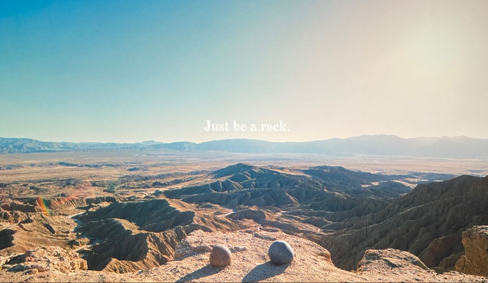

February.15.2022
The movie "Everything Everywhere All At Once" is surreal and absurd. While the film's plot and themes are complex and multi-layered, the metaphor of the internet as a multiverse made me reflect on my relationship with social media. Just as Maureen (the main character) can easily navigate between portals and worlds, we too can easily navigate between different websites and social media platforms. However, just as Maureen's travels between these worlds have consequences, our constant consumption of online content can have negative effects on our productivity and mental health.
As a result, I made the decision to take a break from social media, two months have passed. During this time, I focused on other activities, such as reading, writing, and improving my Front-end knowledge. I found that without the constant distraction of social media, I was able to focus more on my work and my relationships, and I felt more present in the moment.
February.1.2022
After 8 years of experience in marketing, I have decided to take on a new challenge and make a career switch to web development. It's both exciting and scary to embark on this new journey, but I believe that my background will bring a unique perspective and set of skills to the tech industry. As a marketer, I have seen firsthand the importance of bridging the gap between the technology and marketing/sales teams. I have experienced the frustration of miscommunication, conflicting priorities, and the struggle to effectively integrate marketing initiatives with technical capabilities. I am eager to use my skills and experience to build better relationships between the technology and marketing teams, leading to more effective and efficient collaboration. I can't wait to see what the future holds for me in this exciting new journey.
January.18.2022
As I embark on my journey to become a front-end developer, recently, I have been diving into the world of React, a JavaScript library for building user interfaces. React is one of the most popular front-end development frameworks in use today, and for good reason. It makes it easy to create complex and dynamic user interfaces, and allows for efficient updates and re-rendering of components. Stay tuned To see the new version of my weather app developed with React.
January.04.2022
I am currently working on a project that involves creating a playlist based on colors and emotions. The first playlist is called "Yellow" and is meant to be a collection of songs that inspire creativity and joy. I have carefully selected each song on the playlist to reflect the bright and sunny energy of the color yellow. Whether you are working on a creative project, feeling down, or just need a little pick-me-up, I believe that this playlist will be the perfect companion.